Part 2
COUNTERSHAFT ASSEMBLY
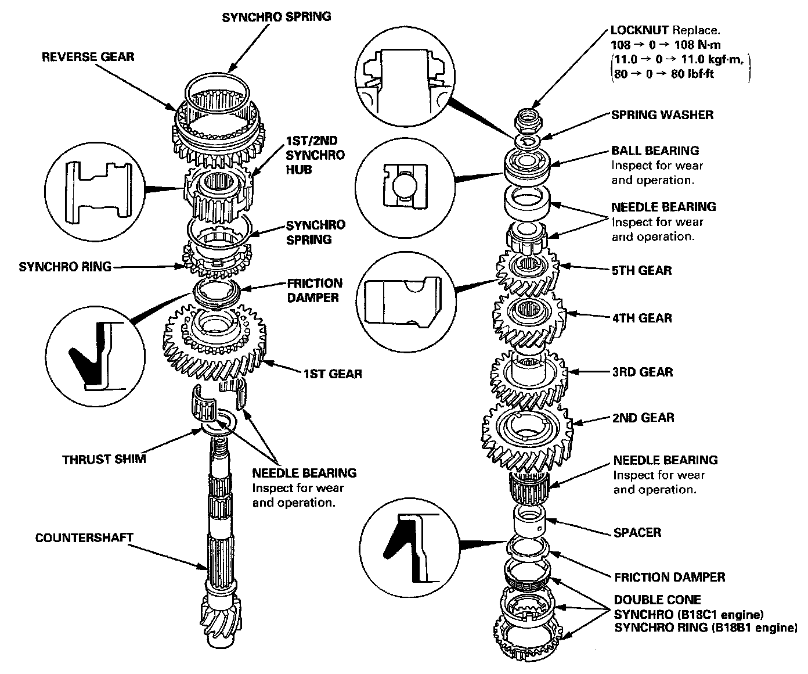
Index
NOTE: The 4th and 5th gears are installed with a press.
Prior to reassembling, clean all the parts in solvent, dry them and apply lubricant to any contact surfaces. The 4th and 5th gears, however, should be installed with a press before lubricating them.
Clearance Inspection
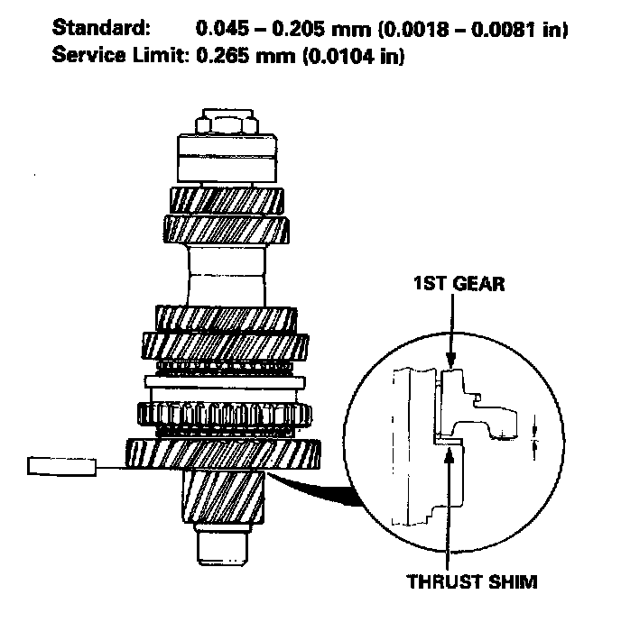
1. Measure the clearance between the thrust shim and 1st gear.
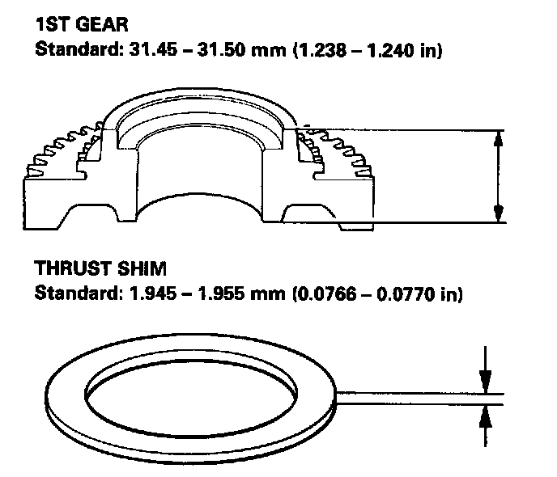
2. If the clearance exceeds the service limit, measure the thicknesses of 1st gear and the thrust shim.
- If the thicknesses of 1st gear and the thrust shim are less than the standard, replace them with new ones.
- If the thicknesses of 1st gear and the thrust shim are within the standard, replace the 1st/2nd synchro hub with a new one.
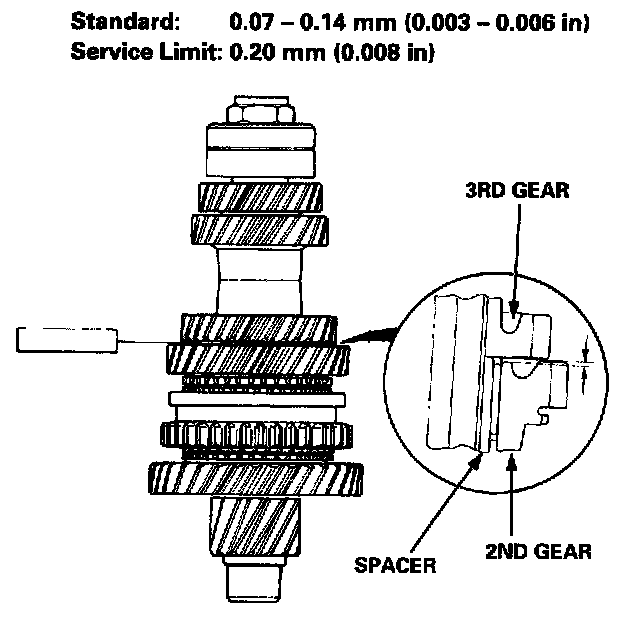
3. Measure the clearance between 2nd and 3rd gears.
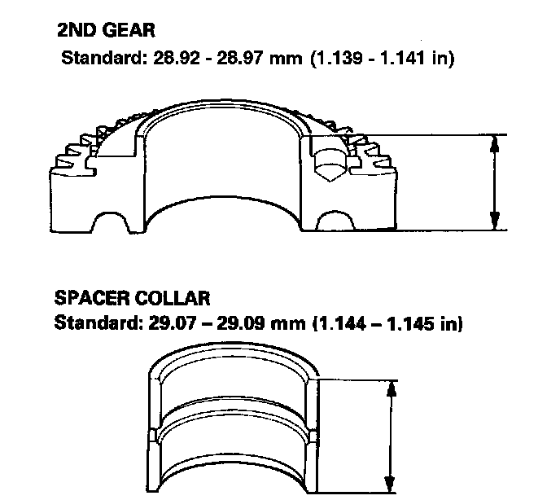
4. If the clearance exceeds the service limit, measure the thicknesses of 2nd gear and the spacer collar.
- If the thicknesses of 2nd gear and the spacer collar are less than the standard, replace them with new ones.
- If the thicknesses of 2nd gear and the spacer collar are within the standard, replace the 1st/2nd synchro hub with a new one.
Disassembly
1. Securely clamp the countershaft assembly in a bench vise with wood blocks.
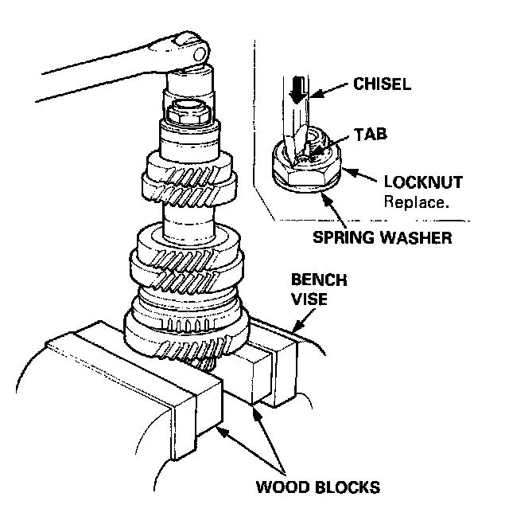
2. Raise the locknut tab from the groove in the countershaft, then remove the locknut and the spring washer.
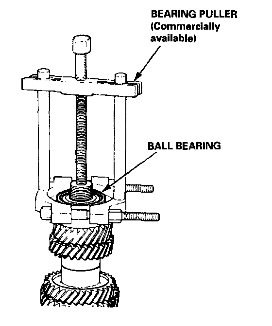
3. Remove the ball bearing using a bearing puller as shown.
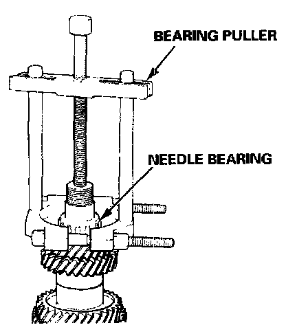
4. Remove the bearing outer race, then remove the needle bearing using a bearing puller as shown.
CAUTION: Remove the gears using a press and the steel blocks as shown. Use of a jaw-type puller can cause damage to the gear teeth.
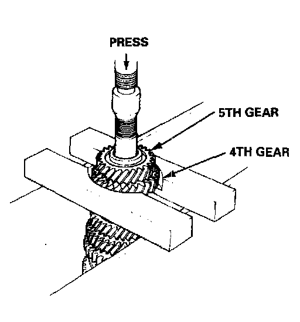
5. Support 4th gear on steel blocks, and press the countershaft out of 5th and 4th gears, as shown.
Inspection
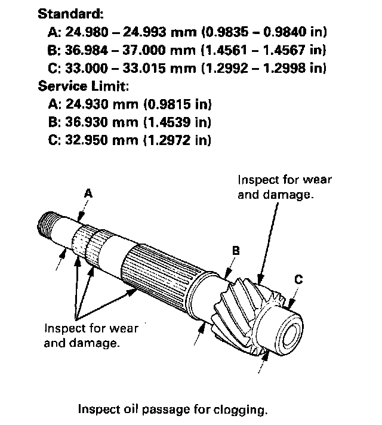
1. Inspect the gear surfaces and the bearing surfaces for wear and damage, then measure the countershaft at points A, B, and C.
- If any parts of the countershaft are less than the service limit, replace countershaft with a new one.
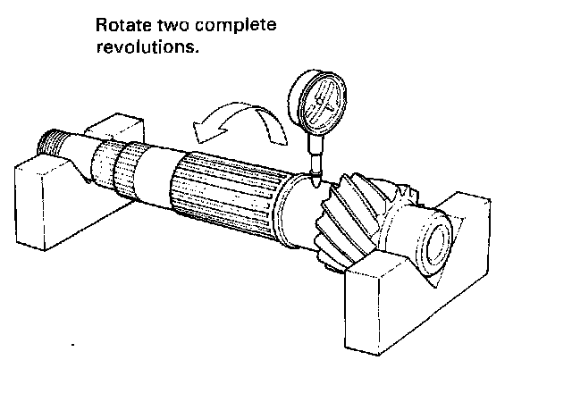
2. Inspect for runout.
Standard: 0.02 mm (0.0008 inch) max.
Service Limit: 0.05 mm (0.002 inch)
NOTE: Support the countershaft at both ends as shown.
If the runout is more than the service limit, replace the countershaft with a new one.
Reassembly
NOTE: Refer to image above for reassembly.
CAUTION:
- Press 4th and 5th gears on the countershaft without lubrication.
- When installing 4th and 5th gears, support the shaft on steel blocks, and install the gears using a press.
- Install 4th and 5th gear with a maximum pressure of 25.5 M (2,600 kgf, 18,806 lbs.).
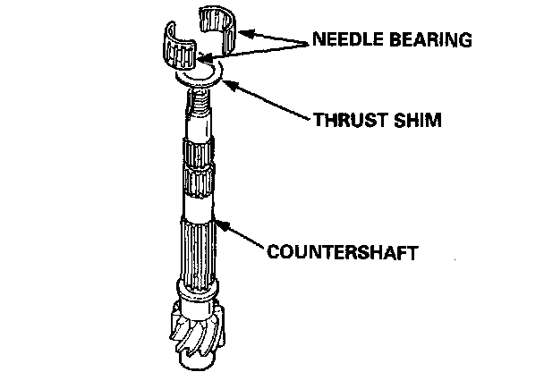
1. Install the thrust shim and the needle bearings on the countershaft.
2. Install the friction damper, the synchro ring, and the synchro spring on 1st gear.
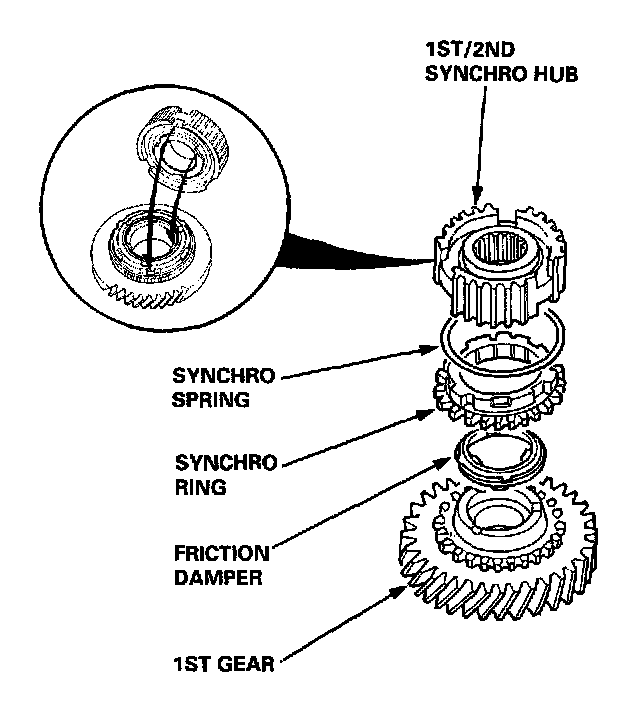
3. Install the 1st/2nd synchro hub by aligning the fingers on the friction damper and the grooves in the 1st/2nd synchro hub, as shown.
4. Install the reverse gear.
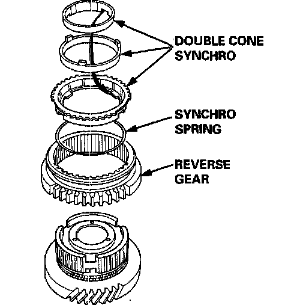
5. Install the synchro spring, and the double cone synchro (B18C1 engine), or synchro ring (B18B1 engine), as shown.
6. Assemble the friction damper, the needle bearing, and 2nd gear, then install them by aligning the fingers on the friction damper and the grooves in the 1st/2nd synchro hub with the fingers of the double cone synchro and the grooves on 2nd gear, as shown.
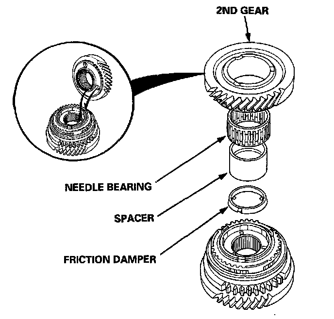
7. Install the spacer.
8. Install the parts assembled in steps 2 - 6 on the countershaft.
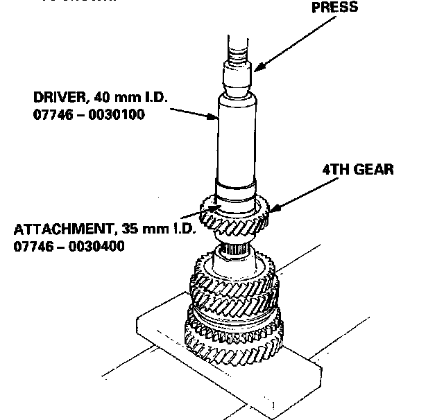
9. Support the countershaft on a steel block, and install 4th gear using the special tools and a press, as shown
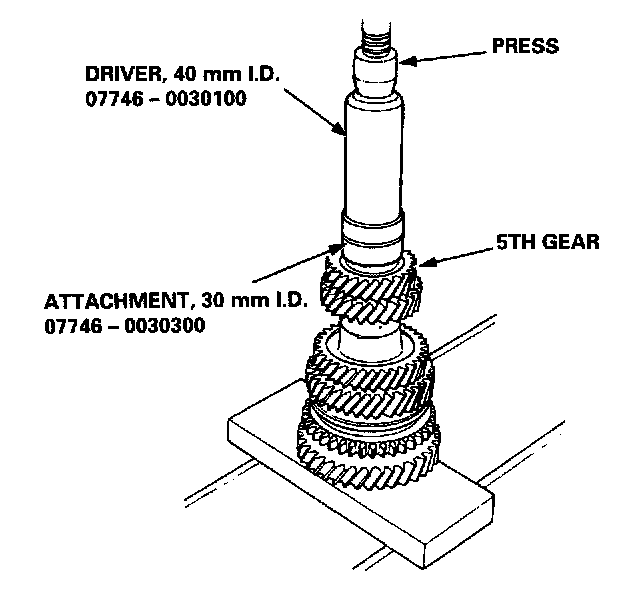
10. Support the countershaft on a steel block, and install 5th gear using the special tools and a press, as shown.
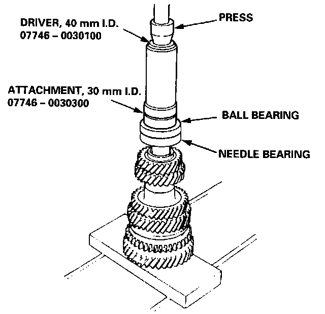
11. Install the needle bearing, then install the ball bearing using the special tools and a press as shown.
12. Securely clamp the countershaft assembly in a bench vise with wood blocks.
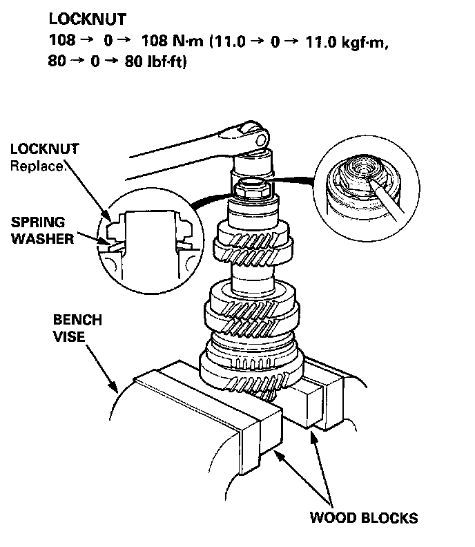
13. Install the spring washer, tighten the locknut, then stake the locknut tab into the groove.
SYNCHRO SLEEVE, SYNCHRO HUB
Inspection
1. Inspect gear teeth on all synchro hubs and synchro sleeves for rounded off corners, which indicates wear.
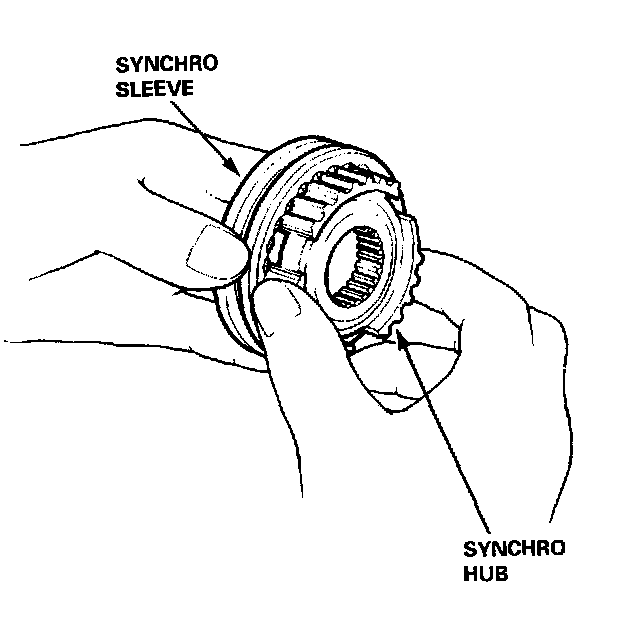
2. Install each synchro hub in its mating synchro sleeve and check for freedom of movement.
NOTE: If replacement is required, always replace the synchro sleeve and synchro hub as a set.
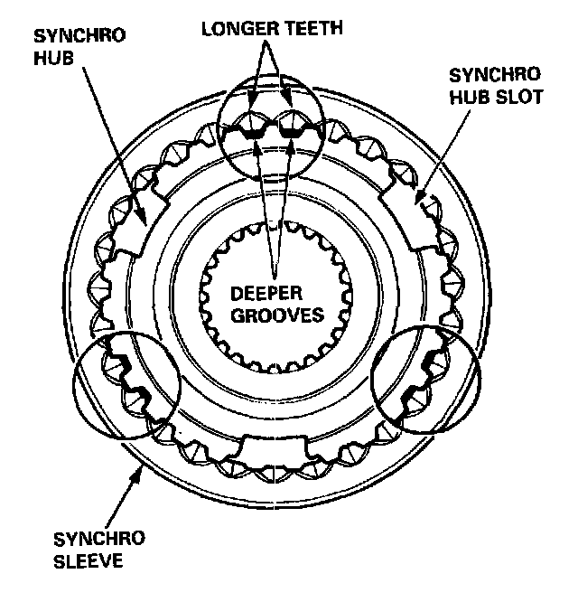
Installation
When assembling the synchro sleeve and synchro hub, be sure to match the three sets of longer teeth (120 degrees apart) on the synchro sleeve with the three sets of deeper grooves in the synchro hub.
CAUTION: Do not install the synchro sleeve with its longer teeth in the synchro hub slots, because it will damage the spring ring.
SYNCHRO RING, GEAR
Inspection
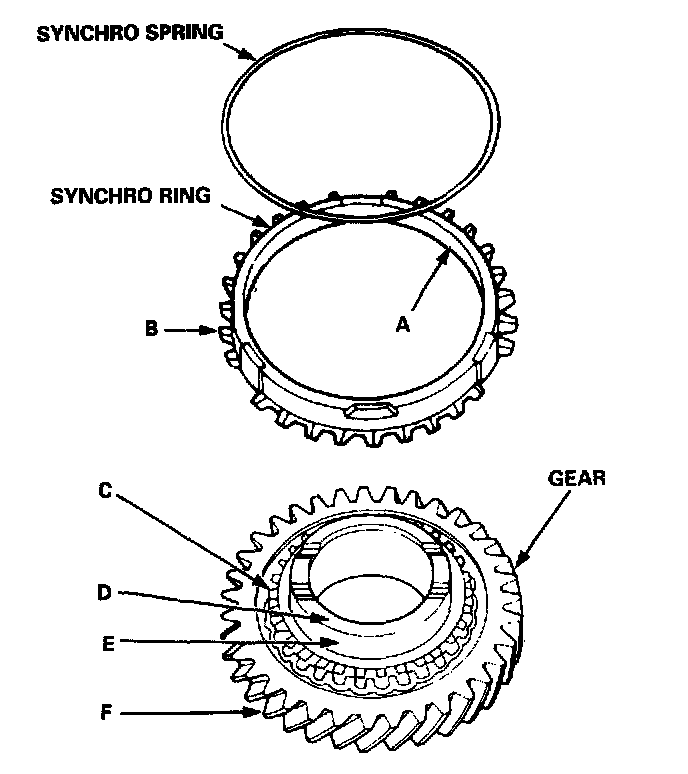
1. Inspect the synchro ring and gear.
A: Inspect the inside of the synchro ring for wear.
B: Inspect the teeth on the synchro ring for wear (rounded off).
C: Inspect the synchro sleeve teeth and matching teeth on the gear for wear (rounded off).
D: Inspect the gear hub thrust surface for wear.
E: Inspect the cone surface for wear and roughness.
F: Inspect the teeth on all gears for uneven wear, scoring, galling, and cracks.
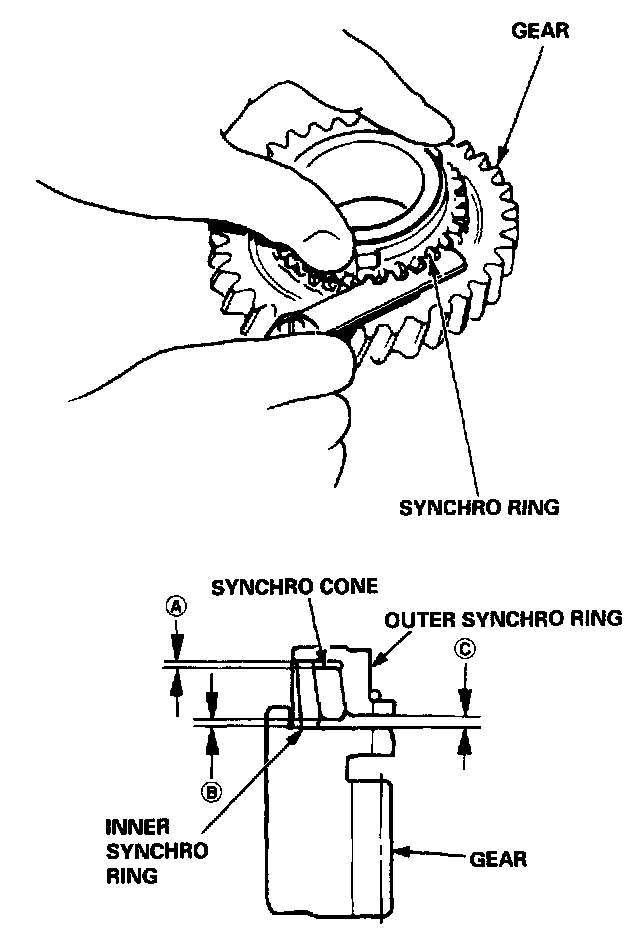
2. Coat the cone surface of the gear with oil, and place the synchro ring on the matching gear. Rotate the ring, making sure that it does not slip.
Measure the clearance between the synchro ring and gear all the way around.
NOTE: Hold the synchro ring against the gear evenly while measuring the clearance.
Synchro Ring-to-Gear Clearance
Standard: 0.85 - 1.10 mm (0.033 - 0.043 inch)
Service Limit: 0.4 mm (0.02 inch)
Double Cone Synchro-to-Gear Clearance Standard:
(A): (Outer Synchro Ring to Synchro Cone) 0.5 - 1.0 mm (0.02 - 0.04 inch)
(B): (Synchro Cone to Gear) 0.5 - 1.0 mm 10.02 - 0.04 inch)
(C): (Outer Synchro Ring to Gear) 0.95 - 1.68 mm (0.037 - 0.066 inch)
Service Limit:
(A): 0.3 mm (0.01 inch)
(B): 0.3 mm (0.01 inch)
(C): 0.6 mm (0.02 inch)
If the clearance is less than the service limit, replace the synchro ring and synchro cone.
CLUTCH HOUSING BEARING REPLACEMENT
Mainshaft:
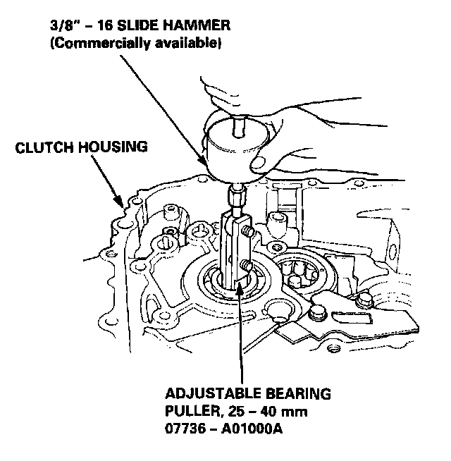
1. Remove the ball bearing using the special tools as shown.
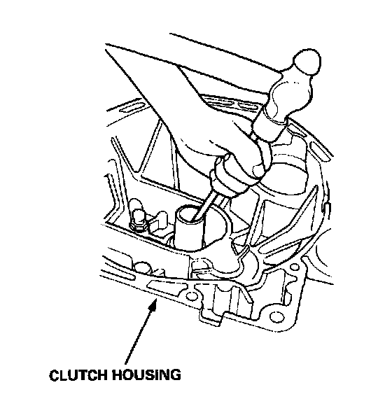
2. Remove the oil seal from the clutch housing.
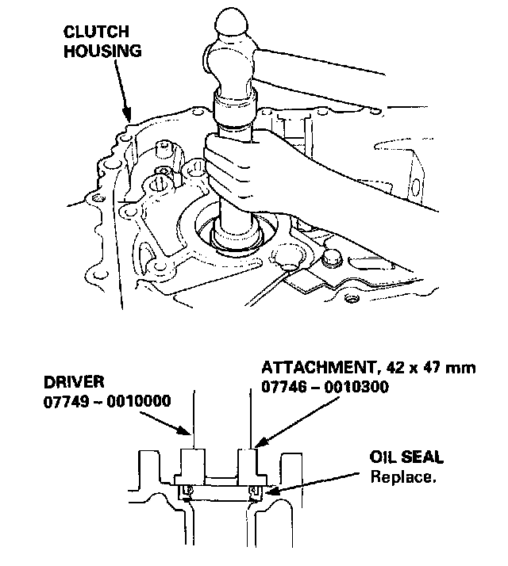
3. Drive the new oil seal into the clutch housing using the special tools as shown.
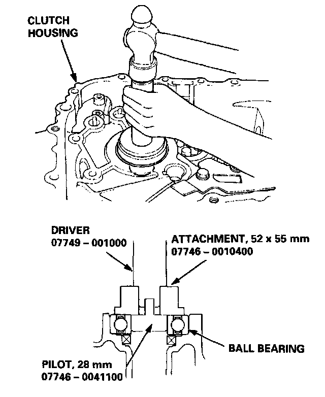
4. Drive the ball bearing into the clutch housing using the special tools as shown.
Countershaft:
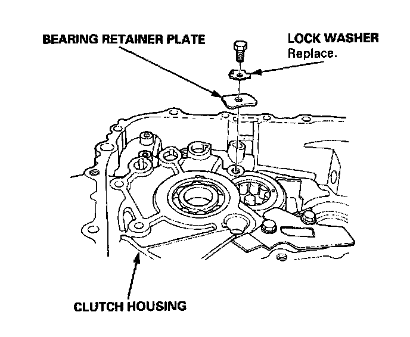
1. Bend the tab on the lock washer down, then remove the bolt and bearing retainer plate.
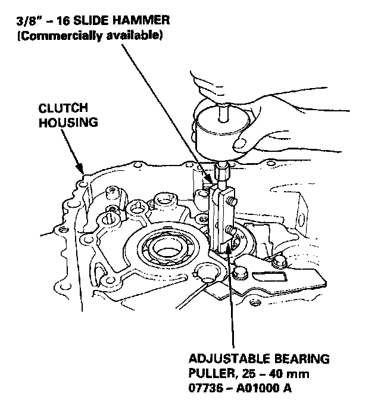
2. Remove the needle bearing using the special tools as shown, then remove the oil guide plate.
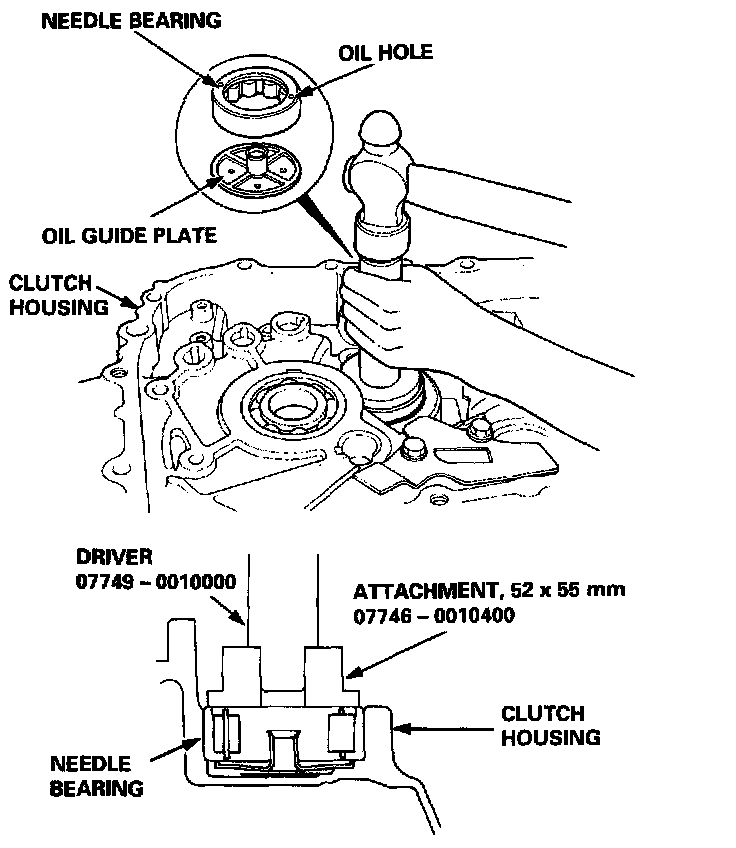
3. Position the oil guide plate and new needle bearing in the bore of the clutch housing, then drive in the needle bearing using the special tools as shown.
NOTE: Position the needle bearing with the oil hole facing up.
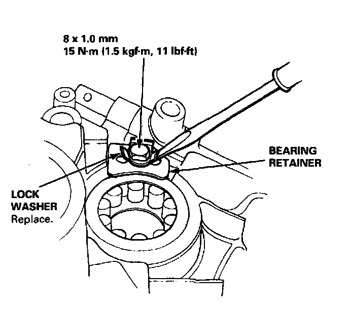
4. Install the bearing retainer plate and new lock washer, then bend the tab against the bolt head.
MAINSHAFT THRUST CLEARANCE
Adjustment
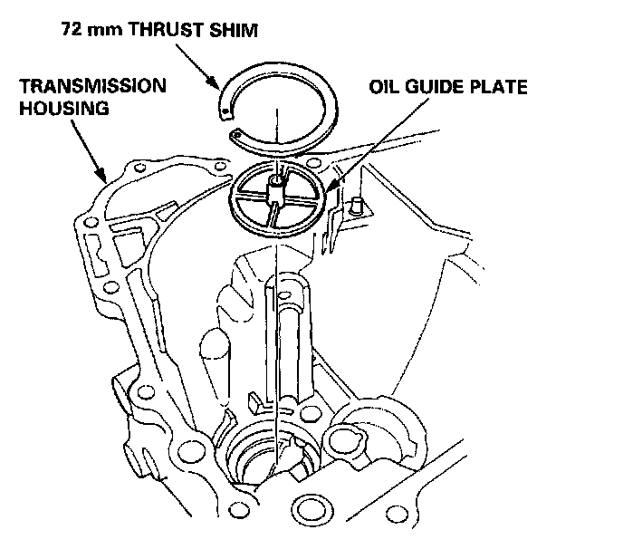
1. Remove the 72 mm thrust shim and oil guide plate from the transmission housing.
2. Install the 3rd/4th synchro hub, spacer collar, 5th synchro hub, spacer, and ball bearing on the mainshaft, then install the above assembly in the transmission housing.
3. Install the washer on the mainshaft.
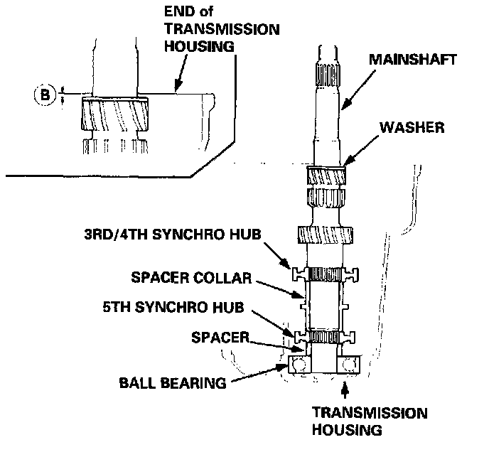
4. Measure distance (B) between the end of the transmission housing and washer.
NOTE:
- Use a straight edge and vernier caliper.
- Measure at three locations and average the reading.
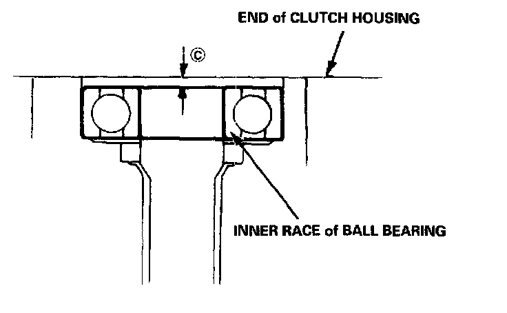
5. Measure distance (C) between the end of the clutch housing and bearing inner race.
NOTE:
- Use a straight edge and depth gauge.
- Measure at three locations and average the readings.
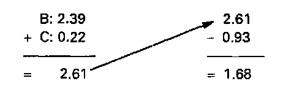
6. Select the proper 72 mm thrust shim from the chart by using the formula below.
NOTE: Use only one 72 mm thrust shim.
Shim Selection Formula:
From the measurements you made in steps 4 and 5:
1. Add distance (C) (step 5) to distance (B) (step 4).
2. From this number, subtract 0.93 (which is the midpoint of the flex range of the clutch housing bearing spring washer).
3. Take this number and compare it to the available shim sizes in the chart.
- Try the 1.68 mm (0.0661 inch) shim.
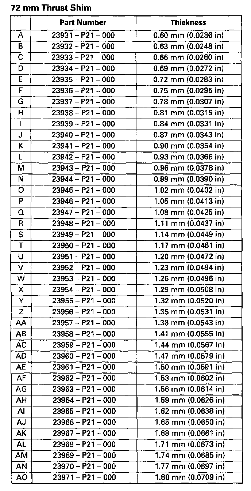
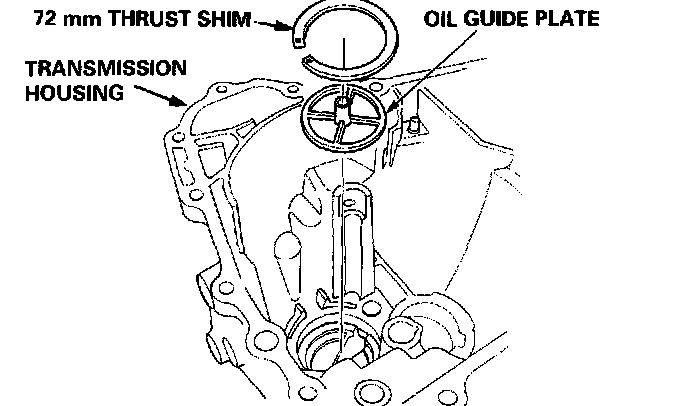
7. Check the thrust clearance in the manner described below.
NOTE: Check the measurement at normal room temperature.
a. Install the thrust shim selected and oil guide plate in the transmission housing.
b. Install the spring washer and washer on the ball bearing.
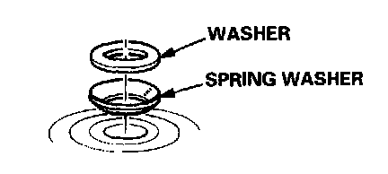
NOTE:
- Clean the spring washer, washer and thrust shim thoroughly before installation.
- Install the spring washer, washer and thrust shim properly.
c. Install the mainshaft in the clutch housing.
d. Place the transmission housing over the main shaft and onto the clutch housing.
e. Tighten the clutch and transmission housings with several 8 mm bolts.
NOTE: It is not necessary to use sealing agent between the housings.
TORQUE 8 x 1.25 mm: 27 Nm (2.8 kgf-m, 20 ft. lbs.)
f. Tap the mainshaft with a plastic hammer.
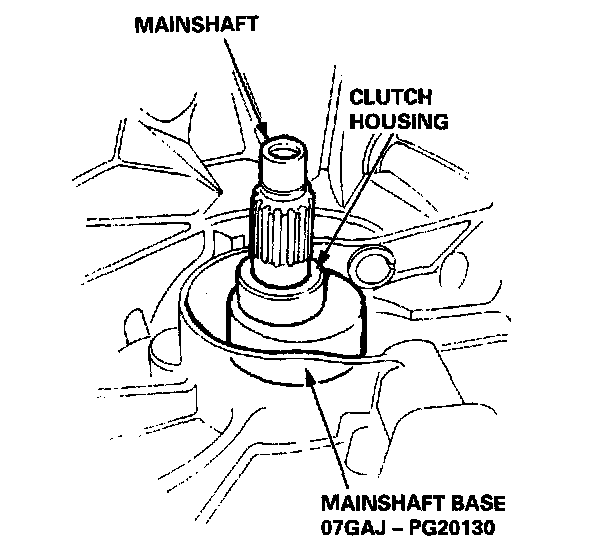
g. Slide the mainshaft base over the mainshaft.
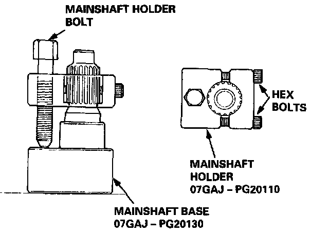
h. Attach the mainshaft holder to the mainshaft as follows:
NOTE:
- Back-out the mainshaft holder bolt and loosen the two hex bolts.
- Fit the holder over the mainshaft so its lip is towards the transmission.
- Align the mainshaft holder's lip around the groove at the inside of the mainshaft splines, then tighten the hex bolts.
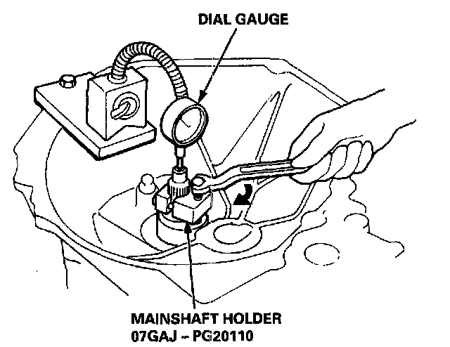
i. Seat the mainshaft fully by tapping its end with a plastic hammer.
j. Thread the mainshaft holder bolt in until it just contacts the wide surface of the mainshaft base.
k. Zero a dial gauge on the, end of the mainshaft.
l. Turn the mainshaft holder bolt clockwise; stop turning when the dial gauge has reached its maximum movement. The reading on the dial gauge is the amount of mainshaft end play.
CAUTION: Turning the mainshaft holder bolt more than 60 degrees after the needle of the dial gauge stops moving may damage the transmission.
m. If the reading is within the standard, the clearance is correct.
If the reading is not within the standard, recheck the shim thickness.
Standard: 0.11 - 0.18 mm (0.004 - 0.007 inch)
TRANSMISSION - REASSEMBLY
1. Install the new oil seal.
2. Set the change piece.
3. Install the shift rod.
4. Install the steel ball, the spring, and the set screw.
5. Install the change piece attaching bolt.
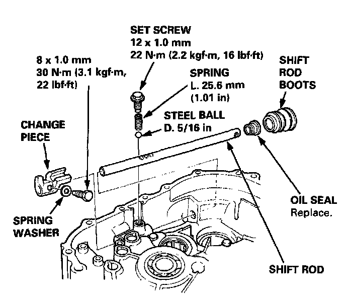
6. Install the shift rod boots.
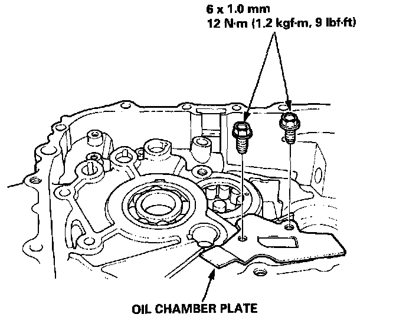
7. Install the oil chamber plate.
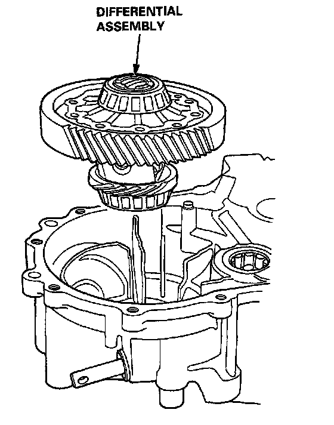
8. Install the differential assembly.
9. Set the spring washer and the washer.
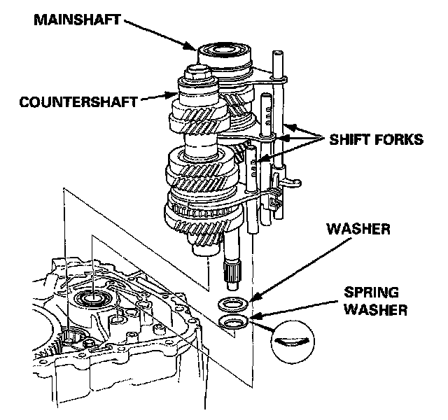
10. Install the mainshaft, the countershaft, and the shift fork assemblies.
NOTE: Align the finger of the interlock with the groove in the shift fork shaft.
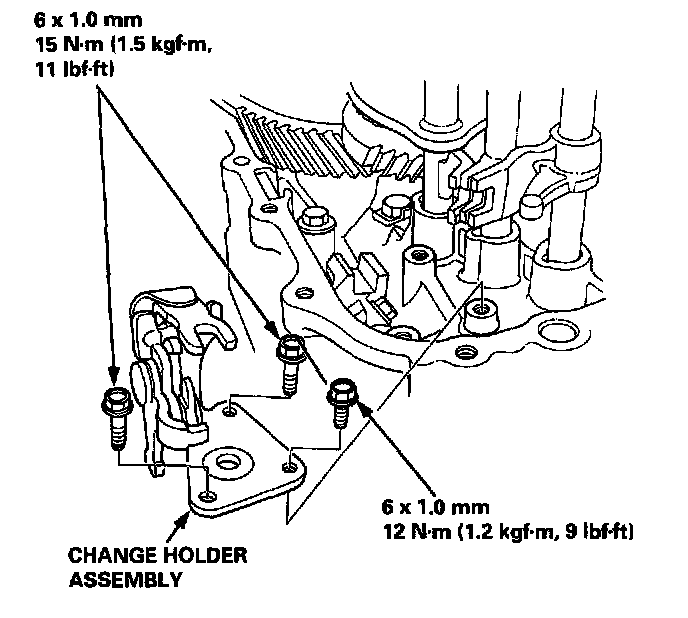
11. Install the change holder assembly.
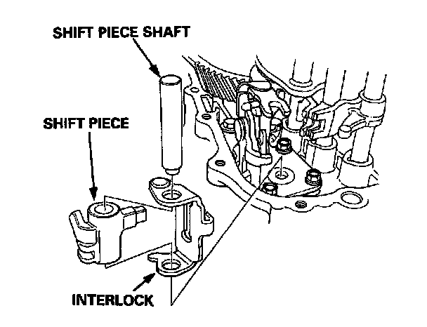
12. Install the shift piece and the interlock, then install the shift piece shaft.
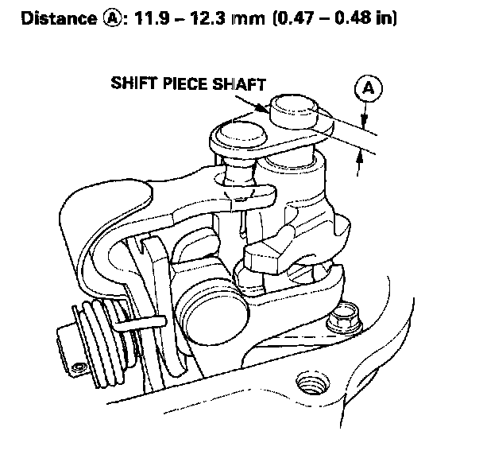
13. Measure the distance (A) after mounting the shift piece shaft. If it's incorrect, check the installation.
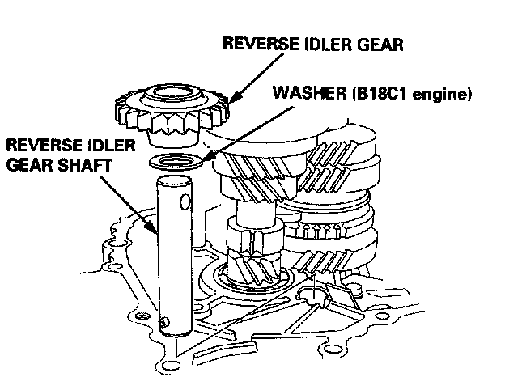
14. Install the reverse idler gear, and the reverse idler gear shaft.
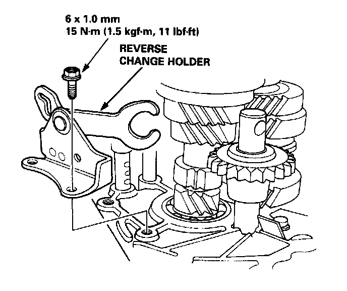
15. Install the reverse change holder.
16. Install the oil guide plate and the 72 mm thrust shim into the transmission housing.
17. Install the oil gutter plate.
18. Bend the hook of the oil gutter plate, then install the 16 mm sealing bolt.
NOTE: Apply liquid gasket (P/N 08718 - 0001) to the threads.
19. Apply liquid gasket to the surface of the transmission housing as shown.
NOTE:
- Use liquid gasket (P/N 08718 - 0001).
- Remove the dirt and oil from the sealing surface.
- Seal the entire circumference of the bolt holes to prevent oil leakage.
- If 20 minutes have passed after applying liquid gasket, reapply it and assemble the housings, and allow it to cure at least 30 minutes after assembly before filling the transmission with oil.
20. Install the dowel pins.
21. Install the transmission housing by aligning the groove in the housing with finger on the stopper ring.
22. Lower the transmission housing with the snap ring pliers, and set the snap ring in the groove of the countershaft bearing.
23. Check that the snap ring is securely seated in the groove of the countershaft bearing.
24. Install the transmission hanger A and back-up light switch clamp, then tighten the transmission housing attaching bolts in the numbered sequence shown above.
25. Install the 32 mm seating bolt.
NOTE: Apply liquid gasket (P/N 08718 - 0001) to the threads.
26. Tighten the reverse idler gear shaft bolt.
27. Install the steel balls, the springs, and the set screws.
28. Install the back-up light switch and the transmission hanger B.